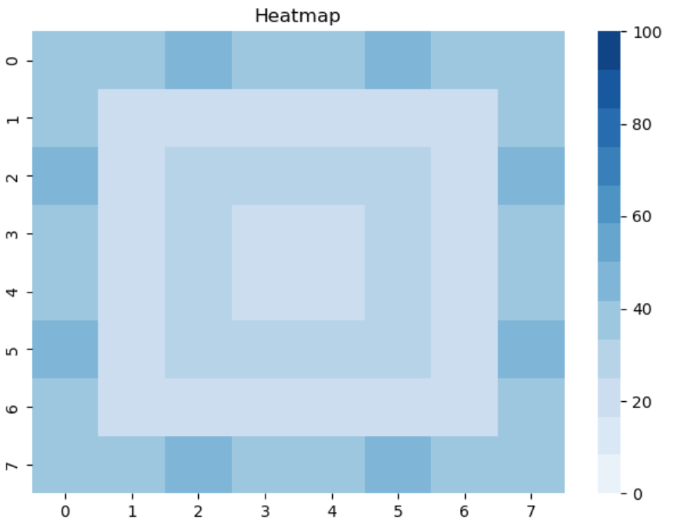
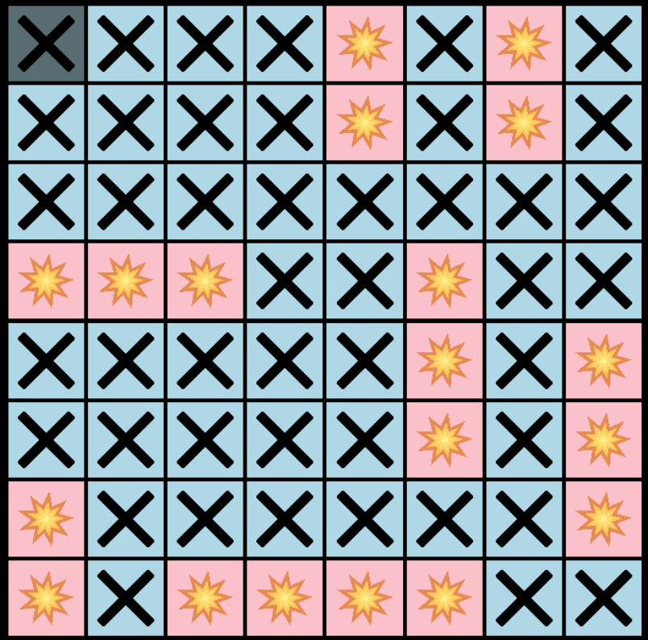
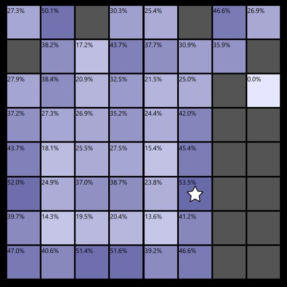
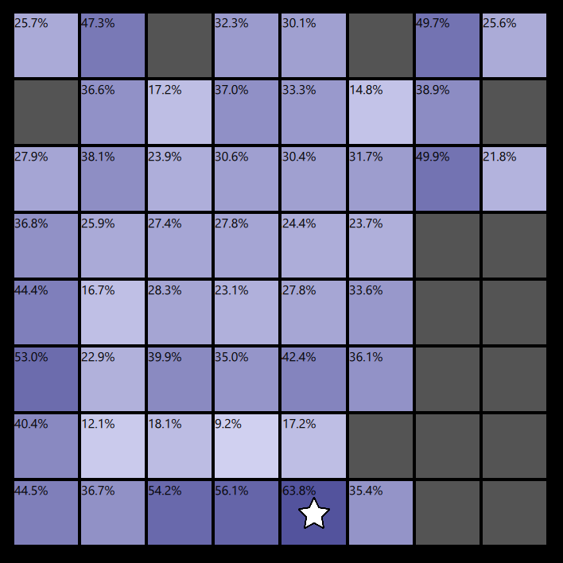
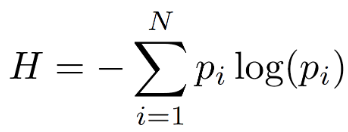

I was recently playing Battleship with a friend when I quickly realized how little I knew about the optimal strategy. Even figuring out where to go first, I was a bit unsure. Since you can’t put ships next to each other, it would seem like the corners might be the best spot to go first since it reduces the amount of spots you can’t place ships and thus it’s more likely to be in the corners, but at the same time it might be less likely since there’s only two ways to put a ship in a corner, vertically or horizontally. There’s plenty of ways to place a ship such that it covers one of the central tiles. So which is it? This is what got me to try to see once in for all what the optimal way to play Battleship is.
For this, we’re going to be using the Gamepigeon version of “Sea Battle” that uses an 8x8 board. It takes in one ship of size 4, three of size 3, and two of size 2. As previously stated, ships can’t be placed next to each other and must be spaced at least one tile apart. Each player takes turns guessing where the ships are placed, if you guess correctly you get to guess again. You’re told when you guess all tiles in a ship and the ship “sinks”. The player who sinks all ships first wins.
We can find the probability of any given tile being a ship tile by counting the number of arrangements where there’s a ship on that tile, then dividing that by the total number of arrangements. This seems like an impossible task since there’s millions of possible arrangements, but we can solve this by breaking it down into millions of simple tasks. The simplest task is to count the number of arrangements where there is only one ship. Counting the number of possibilities is fairly straightforward. For our purposes, we’ll say that a ship's position is the coordinate pair of the leftmost tile of the ship if placed horizontally and the top tile if placed vertically. To count each arrangement we just iterate through every tile and check if the ship can be placed in the position of that tile. To count the number of occurrences a ship is on a given tile, we keep a 2D array storing the number of occurrences on each tile, and we add to that at each position.
Extending this count to more ships isn’t much more difficult. There’s six ships in total. If we already have five ships placed, we can iterate through arrangements the sixth ship can be placed by using the method described above. If we do this for every arrangement of five ships, then we’ve iterated through every arrangement. Unfortunately, we don’t know how to iterate through every arrangement of five ships. We could, however, just iterate through every arrangement of four ships and from there we know all the places we can put the fifth ship. And from there, we could just iterate through every arrangement of three ships and we’ll know each place to put the fourth ship, and … we could iterate through every arrangement of one ship and we’ll know each place to put the second ship. Doing this, we’ve counted each arrangement of ships recursively. Let’s put this in a more formal manner by writing some pseudo code:
Def CountShips(List shipsToPlace, currArrangement)
shipPositions[8][8] = all 0s
if(shipBeingPlaced is empty):
shipPositions = 1 where currArrangment has a ship
return shipPositions
shipBeingPlaced = shipsToPlace[1]
for each position shipBeingPlaced can be placed in currArrangement:
newArrangement = currArrangement with shipBeingPlaced in position
shipPositions += CountShips(shipsToPlace - shipBeingPlaced, newArrangement)
return shipPositions
There is a subtle error in this code. We have two ships of the same size, but the code treats them as being different. This leads to some double counting. To fix this, we only iterate the second ship in positions the first ship hasn’t iterated through.
There are a total of 382820608 possible arrangements, and here’s the number of arrangements where a given tile has a ship.
| 144818930 | 137093237 | 161872662 | 141993330 | 141993330 | 161872662 | 137093237 | 144818930 |
| 137093237 | 67090320 | 85432751 | 66371076 | 66371076 | 85432751 | 67090320 | 137093237 |
| 161872662 | 85432751 | 123709858 | 105097738 | 105097738 | 123709858 | 85432751 | 161872662 |
| 141993330 | 66371076 | 105097738 | 87057192 | 87057192 | 105097738 | 66371076 | 141993330 |
| 141993330 | 66371076 | 105097738 | 87057192 | 87057192 | 105097738 | 66371076 | 141993330 |
| 161872662 | 85432751 | 123709858 | 105097738 | 105097738 | 123709858 | 85432751 | 161872662 |
| 137093237 | 67090320 | 85432751 | 66371076 | 66371076 | 85432751 | 67090320 | 137093237 |
| 144818930 | 137093237 | 161872662 | 141993330 | 141993330 | 161872662 | 137093237 | 144818930 |
And here are the proportions in each tile:

lets see how this does in an actual game. We'll use the arrangement below to test it and pick the most likely hit each time. For the sake of consistency, if two or more tiles have the same probability, the upper left most tile will be picked.

As you can see, it works decently, but it feels like it could use more work. Once a few ships are taken out there's a period where we don't really have a good idea of where anything is and we're back to guessing and hoping. There are times where the moves don’t really provide us with much information; where each tile is fairly close to being equally unlikely to be a ship. Let’s consider these two positions below. Both moves are misses, but the one on the left yields a most likely move of 53.5%, and the other, 63.8%.


But the problem is that the left is where we’d go if we picked the most likely. If we go in an “nonoptimal” spot, then we can see that there’s more variance in probability, and thus more certainty. Is it worth playing a less likely tile just so that you can set yourself up for higher chances later? How do we measure this predictability in the board, and how do we determine if a less likely hit is worth taking?
In information theory, there’s this idea of entropy. It tells you how much you know about a random variable and how random this random variable is. For example a coin that flips heads 50% of the time has more entropy than a coin that flips heads 90% of the time, since a 50% chance is less predictable than a 90% chance. Entropy is a way of quantifying uncertainty, and in the case of Battleship, our goal is to minimize the uncertainty when it comes to guessing whether or not a tile contains a ship. Below is the equation for entropy, which we’ll apply to every tile on the board. We’ll then add up all those values to get a total entropy.

Now calculating the entropy of each tile itself isn’t that useful, but calculating the expected amount of total entropy from guessing a tile is where its use shines. For each tile, we can see the probability distribution if a guess is a hit, and calculate the total entropy, then we find the probability distribution if a guess is a miss and calculate the total entropy of that. We then take a weighted average of the two based on the probability of a hit and a miss and get an expected total entropy from guessing a tile. Doing that for each tile, we can determine which guess will provide us with the most information.
There’s one problem with this, however, and it’s that it takes forever on emptier boards. On a completely empty board, it takes about 2 minutes to run through every combination and find the probabilities. Doing that for each tile twice (one for a hit and one for a miss) is going to take hours. (81 tiles) * (2 per tile) * ( 2 minutes) = (5.4 hours). We can mitigate this by taking advantage of symmetry, which diving by 8 gives 0.675 hours, but that’s just for an empty board. The calculations will speed up once there’s less possibilities to run through, but it’s still a long time at the start and we need a better way to calculate.
We can use 4D arrays to store not only the locations of the ships, but the locations given that a tile is a hit or a miss. So in the coordinates (a,b,c,d) on the array, we will be able to see that given that the tile (a,b) has a ship, there are N cases where (c,d) also has a ship. By storing our data this way, we can calculate the total entropy by iterating through all the possible ship arrangements only once instead of 162 times (two per tile).
We can think of this 4D array as being a 2D array of 2D arrays, where the coordinate (a,b) takes you to the (c,d) array. To fill out this 4D array, at each arrangement of ships, we iterate through each tile. For each iteration, if that tile has a ship, we go to the (a,b) array corresponding to the tile coordinates and add each ship tile in the arrangement to that array. Doing that for each tile for each ship arrangement, we’re able to get the conditional positions of ships.
We’re not quite done yet since we don’t have the conditions of there not being ships. We want to know how many arrangements where, if (a,b) doesn’t have a ship that (c,d) does. Luckily we can use the data we already have to calculate this. For this explanation, we’ll call the number of arrangements with a ship on a tile the number of hits, and the number of arrangements without a ship on a given tile the number of misses. Here’s some premises we use to make this calculation:
Using this we find that (c,d,c,d) - (c,d,a,b) gives us the number of hits on (c,d) given (a,b) is a miss.
So with all this explanation, does this actually work? Let’s run through a game, picking the tile that yields the lowest expected entropy each time.
Looking at the test game, it seems like it. It does much better than the other strategy and seems to fix the problem with it. It's nice to run through it and see each tile diverge into dark and light blues. I'm not convinced that it's a perfect strategy though, but I dont know how I'd test it, or if a perfect solution is even computationally viable. This already takes a long time to compute. I might come back to this, do more testing, and try to find other strategies, but for now, I'm done with working on this. I may or may not come back to this. Source code for this project can be found here